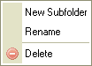
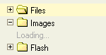

Kansioiden muodostama puurakenne, jossa voidaan liikkua. Kansioiden avulla järjestellään tiedostoja.
Rakennetta kutsutaan puunäkymäksi, koska kansiot on esitetty hierarkkisesti kuten puun oksat. Yleisilme vastaa modernien graafisten käyttöjärjestelmien tiedostoselainnäkymää.
Avataksesi kansion, eli näyttääksesi alikansiot, napsauta kansion edessä olevaa plusmerkkiä
( ). Jollei plusmerkkiä näy, kansio ei sisällä alikansioita.
). Jollei plusmerkkiä näy, kansio ei sisällä alikansioita.
Katso "Kutsusta lataaminen" alempana tällä sivulla ymmärtääksesi, kuinka kansioiden lataaminen toimii.
Paina kansion edessä näkyvää miinusmerkkiä sulkeaksesi kansion ().
Valitaksesi kansion, napsauta kansionimeä tai -kuvaketta. Valitun kansion taustaväri muuttuu.
Kansion edityneempiin toimintoihin pääset "pikavalikosta". Tarjolla on seuraavat valinnat:

Huom: Jotkin pikavalikon valinnat voivat olla kytkettynä pois, mikäli pääkäyttäjä on näin valinnut.
Luodaksesi alikansion, napsauta "Uusi alikansio" -valintaa pikavalikossa. Valintaruutu ilmestyy kysyen lisättävän kansion nimeä. Kirjoita ja vahvista nimi.
Kansio- ja tiedostonimissä ei voi käyttää kaikkia merkkejä. Tämä on käyttöjärjestelmäkohtaista. Esim. : \ / : * ? " < > |
Uudelleennimetäksesi kansion, napsauta "Uudelleennimeä"-valintaa pikavalikossa. Ilmestyy valintaikkuna, jossa näkyy kansion nykyinen nimi. Kirjoita uusi nimi ja vahvista valinta.
Kansio- ja tiedostonimissä ei voi käyttää kaikkia merkkejä. Tämä on käyttöjärjestelmäkohtaista. Esim. : \ / : * ? " < > |
Huom: Kun uudelleennimeät kansion, linkin tai mediatiedoston, jota käytetään jollain toisellakin sivulla, toisen sivun linkit rikkoontuvat. Ole siis varovainen toimenpiteen suhteen.
Poistaaksesi kansion sisältöineen, napsauta "Poista" pikavalikossa. Näkyviin ilmestyy ikkuna, jossa kysytään varmistusta toimenpiteelle.
Huom: Kun poistat kansion, linkin tai mediatiedoston, jota käytetään jollain toisellakin sivulla, toisen sivun linkit rikkoontuvat. Ole siis varovainen toimenpiteen suhteen.
CKFinderissa kansioiden sisältö ladataan "kutsusta" toisin kuin paikallisia kansioita selattaessa. Ts. aluksi ladataan vain puurakenteen näkyvät kansiot, ja vasta avattaessa kansiota ladataan alikansiot ja tiedostot näkyviin. Tämä on tavallista nettisovellusten suhteen.
Kansioiden latautumisen havaitset ilmoituksesta "Lataan...":

Ilmoitus katoaa automaattisesti kansion lataannuttua. Ensimmäisen latauskerran jälkeen ilmoituksen ei pitäisi uudelleen ilmestyä samalle kansiolle.